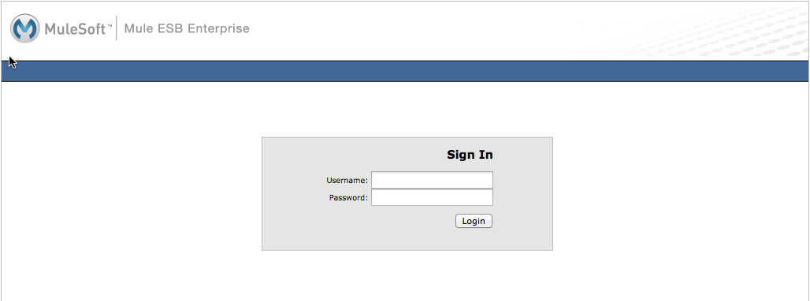
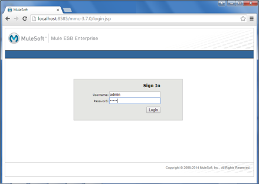
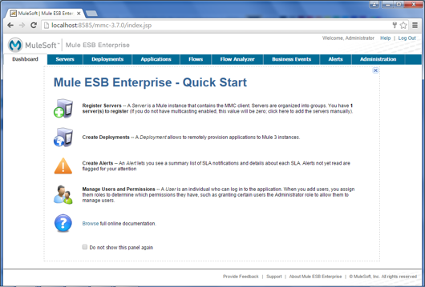

Installing the Trial Version of MMC
MuleSoft offers a trial version of the Mule Management Console for evaluation. The trial version is limited in some functionality and is not appropriate for production deployments. For information about installing the production version of MMC, you can refer instead to Installing the Production Version of MMC.
| The MMC software contains the 3.7 version number, but is backward compatible with earlier versions of Mule. |
Prerequisites
This document assumes that you have downloaded the current version of MMC. For information about installing the production version of MMC, see Installing the Production Version of MMC.)
See:
Viewing Command Help
The scripts accept several parameters. For a listing of these parameters, run the desired script from the command line with the -h (or --help) option. For example, ./startup.sh -h.
Download and Start MMC Using Mac or Linux
-
Go to MMC and click Download.
-
Choose where to save the MMC distribution.
-
Extract the file. The MMC distribution file expands to these directories and files:
drwxrwxrwx@ 3 login_id# 102 release_date mmc-3.7.0 drwxr-xr-x@ 18 login_id# 612 release_date mule-enterprise-3.7.0 -rwxr-xr-x@ 1 login_id# 2847 release_date shutdown.bat -rwxr-xr-x@ 1 login_id# 2529 release_date shutdown.sh -rwxr-xr-x@ 1 login_id# 1643 release_date startup.bat -rwxr-xr-x@ 1 login_id# 3965 release_date startup.sh -rwxr-xr-x@ 1 login_id# 940 release_date status.sh -
To start MMC and Mule ESB, follow these steps:
-
Open a command line or a terminal, and
cdto the unzipped directory where the scripts reside. -
Launch the startup script using
./startup.sh$ cd mmc-distribution-mule-console-bundle-3.7.0 ./startup.sh Please enter the desired port for Mule [Default 7777]: Starting MMC, please wait... Tomcat started ...Messages... Mule Started Mule running as PID=5979 Tomcat and MMC running as PID=5671 Finished starting Mule and MMC. Please go to +http://localhost:8585/mmc-3.7.0+ $
Always run the scripts from the directory in which they reside. The scripts contain relative paths and do not work properly if you run them from another directory. You can also launch the Unix startup scripts with custom parameters, such as special listening ports. For details, see [Script Parameters] below. The Windows script automatically uses port 8585 for Tomcat and 7777 for Mule.
-
-
The startup script prompts you for the listening port for Mule. Enter the desired port, or press Enter to accept the default, 7777. On Windows, the startup script does not prompt you for the Mule port, since it always uses the default, 7777.
-
The startup script launches an embedded Tomcat server (listening on port 8585 by default) and deploys MMC to it. Then, it starts Mule ESB. During startup, your terminal console fills with startup messages. After startup is complete, the script finishes and you regain your terminal prompt. The last few messages indicate successful startup.
At this point, Mule and MMC are up and running.
-
Log in to MMC by opening a Web browser to
http://localhost:8585/mmc-3.7.0. -
You are greeted by the MMC welcome screen, shown below. Log in with username
admin, passwordadmin.
Congratulations, you’ve installed and launched the Mule Management Console! See the links in the See Also section to learn more about MMC.
Status Using Mac or Linux
Shows whether Mule or MMC are running, and lists their PIDs if appropriate.
This script has no options other than the -h or --help option.
Sample Output
$ ./status.sh
MMC is running as PID=4242.
Mule Enterprise Edition is running as PID=5454.Stop MMC and Mule Using Mac or Linux
Shuts down any instances of Mule and/or MMC running on Tomcat.
Specify which component(s) to shut down. Valid options are mule and mmc. If not specified, the script prompts you with the following options:
-
Shut down Mule and MMC (default)
-
Shut down MMC only
-
Shut down Mule only
| Parameter | Example |
|---|---|
|
|
$ ./shutdown.sh
Please choose what to do [1/2/3]:
1) Shut down Mule and MMC [Default]
2) Shut down MMC only
3) Shut down Mule only
1
Shutting down MMC and stopping Mule, please wait...
Shutting down MMC...
Using CATALINA_BASE: PATH/mmc-distribution-mule-console-bundle-3.7.0/mmc-3.7.0/apache-tomcat-7.0.52
Using CATALINA_HOME: PATH/mmc-distribution-mule-console-bundle-3.7.0/mmc-3.7.0/apache-tomcat-7.0.52
Using CATALINA_TMPDIR: PATH/mmc-distribution-mule-console-bundle-3.7.0/mmc-3.7.0/apache-tomcat-7.0.52/temp
Using JRE_HOME: Library/Java/JavaVirtualMachines/jdk1.8.0_51.jdk/Contents/Home
Using CLASSPATH: PATH/mmc-distribution-mule-console-bundle-3.7.0/mmc-3.7.0/apache-tomcat-7.0.52/bin/bootstrap.jar:PATH/mmc-distribution-mule-console-bundle-3.7.0/mmc-3.7.0/apache-tomcat-7.0.52/bin/tomcat-juli.jar
Java HotSpot(TM) 64-Bit Server VM warning: ignoring option MaxPermSize=512m; support was removed in 8.0
MULE_HOME is set to PATH/mmc-distribution-mule-console-bundle-3.7.0/mule-enterprise-3.7.0
Stopping Mule Enterprise Edition...
Waiting for Mule Enterprise Edition to exit...
Stopped Mule Enterprise Edition.
$Restarting MMC in Mac or Linux
After you enter ./shutdown.sh at the command line, you can restart MMC by just entering the ./startup.sh command.
MMC Logs in Mac or Linux
The messages output by the startup and shutdown scripts are replicated and stored in logs:
-
For Tomcat and MMC:
INSTALL_DIR/mmc-distribution-mule-console-bundle-3.7.0/mmc-3.7.0/apache-tomcat-7.0.52/logs -
For Mule ESB:
INSTALL_DIR/mmc-distribution-mule-console-bundle-3.7.0/mule-enterprise-3.7.0/logs
Download and Start MMC Using Windows
| Always run the scripts from the directory in which they reside. The scripts contain relative paths and do not work properly if you run them from another directory. |
The status script is not available for Windows.
|
The startup.bat script launches an instance of Mule Enterprise and an instance of MMC inside a Tomcat app server. This script has no options other than the -h or --help option.
By default, the startup script uses port 7777 for Mule and 8585 for Tomcat. Before launching, the script checks to see that these ports are not in use. If the ports are being used, the script exits with an error message.
| Either JAVA_HOME or JRE_HOME must be set for the startup script to run successfully. |
To start MMC in Windows:
-
Download and unzip the trial version of the Mule Management Console.
-
Locate the command prompt, right click the command prompt, and click Run as administrator.
-
Windows prompts to be sure you want to proceed.
-
Change directory to the folder containing your unzipped MMC software and change directory to the
mmc-distribution-mule-console-bundle-3.7.0folder.The directories and files are:
DATE_TIME <DIR> . DATE_TIME <DIR> .. DATE_TIME <DIR> mmc-3.7.0 DATE_TIME <DIR> mule-enterprise-3.7.0 DATE_TIME 2,847 shutdown.bat DATE_TIME 2,529 shutdown.sh DATE_TIME 1,643 startup.bat DATE_TIME 3,965 startup.sh DATE_TIME 940 status.sh 5 File(s) 11,924 bytes 4 Dir(s) 254,422,167,552 bytes free -
Start MMC by typing
startup.batat the command line. If prompted, allow Tomcat access to your firewall. Tomcat starts a second command prompt window.The startup command doesn’t exit. You must open a second command line that you run as administrator to stop MMC. -
The startup script launches an embedded Tomcat server (listening on port 8585 by default) and deploys MMC to it. Then, it starts Mule ESB. During startup, your terminal console lists startup messages:
C:\Users\user\Downloads\mmc\mmc-distribution-mule-console-bundle-3.7.0>startup.bat Starting MMC, please wait... Starting Mule, please wait... MULE_HOME is set to C:\Users\user\Downloads\mmc\mmc-distribution-mule-console-bundle-3.7.0\mule-enterprise-3.7.0 Using CATALINA_BASE: "C:\Users\user\Downloads\mmc\mmc-distribution-mule-console-bundle-3.7.0\mmc-3.7.0\apache-tomcat-7.0.52" Using CATALINA_HOME: "C:\Users\user\Downloads\mmc\mmc-distribution-mule-console-bundle-3.7.0\mmc-3.7.0\apache-tomcat-7.0.52" Using CATALINA_TMPDIR: "C:\Users\user\Downloads\mmc\mmc-distribution-mule-console-bundle-3.7.0\mmc-3.7.0\apache-tomcat-7.0.52\temp" Using JRE_HOME: "C:\Program Files\Java\jdk1.7.0_71" Using CLASSPATH: "C:\Users\user\Downloads\mmc\mmc-distribution-mule-console-bundle-3.7.0\mmc-3.7.0\apache-tomcat-7.0.52\bin\bootstrap.jar;C:\Users\user\Downloads\mmc\mmc-distribution-mule-console-bundle-3.7.0\mmc-3.7.0\apache-tomcat-7.0.52\bin\tomcat-juli.jar" C:\Users\user\Downloads\mmc\mmc-distribution-mule-console-bundle-3.7.0\mmc-3.7.0\apache-tomcat-7.0.52>Mule Enterprise Edition service installed. MULE_HOME is set to C:\Users\user\Downloads\mmc\mmc-distribution-mule-console-bundle-3.7.0\mule-enterprise-3.7.0 Starting the Mule Enterprise Edition service... Waiting to start... Waiting to start... Waiting to start... Waiting to start... Waiting to start... Mule Enterprise Edition started. ---------- MULE-ENTERPRISE-3.7.0\LOGS\MULE_EE.LOG ---------- MULE-ENTERPRISE-3.7.0\LOGS\MULE_EE.LOG --> Wrapper Started as Service INFO 2016-02-09 12:17:54,030 [WrapperListener_start_runner] org.mule.util.queue.QueueXaResourceManager: Started ResourceManager INFO 2016-02-09 12:18:05,639 [WrapperListener_start_runner] org.eclipse.jetty.server.handler.ContextHandler: Started o.e.j.w.WebAppContext@2eca8e16{/mmc-support,jar:file:/C:/Users/user/Downloads/mmc/mmc-distribution-mule-console-bundle-3.7.0/mule-enterprise-3.7.0/lib/mule/mmc-agent-impl-3.7.0.jar!/mmc-support-app,AVAILABLE} INFO 2016-02-09 12:18:05,717 [WrapperListener_start_runner] org.eclipse.jetty.server.ServerConnector: Started ServerConnector@74e45d2a{HTTP/1.1}{0.0.0.0:7777} + Started domain 'default' + + Started app 'default' + Mule Started Finished starting Mule and MMC. Please go to +http://localhost:8585/mmc-3.7.0+At this point, Mule and MMC are up and running.
-
Log in to MMC by opening a web browser to
http://localhost:8585/mmc-3.7.0. -
You are greeted by the MMC welcome screen. Log in with the username admin and password admin:
The console image appears:

Congratulations, you’ve installed and launched the Mule Management Console! See the links in the See Also section to learn more about MMC.
Stop MMC and Mule Using Windows
Shut down any instances of Mule and/or MMC running on Tomcat.
Specify which component(s) to shut down. Valid options are mule and mmc. If not specified, the script prompts you with the following options:
-
Shut down Mule and MMC (default)
-
Shut down MMC only
-
Shut down Mule only
| Parameter | Example |
|---|---|
|
|
Example Output
> shutdown.bat
Please choose what to do [1/2/3]:
1) Shutdown Mule and MMC [Default]
2) Shutdown MMC only
3) Shutdown Mule only
[1/2/3]:1
MULE_HOME is set to INSTALL_DIR\mmc-distribution-mule-console-bundle-3.7.0\mule-enterprise-3.7.0
Stopping the Mule Enterprise Edition service...
Waiting to stop...
Mule Enterprise Edition stopped.
MULE_HOME is set to INSTALL_DIR\mmc-distribution-mule-console-bundle-3.7.0\mule-enterprise-3.7.0
Mule Enterprise Edition service removed.
>Restarting MMC in Windows
-
Before starting, dismiss all command prompt windows and any Tomcat windows that are present.
-
Open a new command prompt window not as administrator, change directory to the MMC distribution directory and use the startup.bat command to restart MMC.
-
In the 'User Account Control' window, click Yes to let the program make changes to this computer.
-
If the command fails because port 8585 is in use, change directory to the distribution directory and re-enter the shutdown.bat command.
-
Open a new command prompt window, change directory to the distribution directory, and use startup.bat command to restart MMC. If needed, repeat steps 2 to 4 until startup.bat is successful.
MMC Logs in Windows
The messages output by the startup and shutdown scripts are replicated and stored in logs:
-
For Tomcat and MMC:
INSTALL_DIR\mmc-distribution-mule-console-bundle-3.7.0\mmc-3.7.0\apache-tomcat-7.0.52\logs -
For Mule ESB:
INSTALL_DIR\mmc-distribution-mule-console-bundle-3.7.0\mule-enterprise-3.7.0\logs\mule_ee.log
See Also
-
Get familiar with the MMC console
-
Learn the basics of using MMC with the MMC Walkthrough